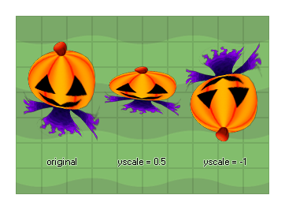

image_yscale
Returns: Real
This value sets the vertical scaling applied to the sprite that
has been assigned to the current instance. A scale of 1 indicates
no scaling (1:1), smaller values will scale down (0.5, for example,
will half the width of the sprite), larger values will scale up and
negative values will mirror the sprite and scale it unless
the value used is exactly -1 (in which case the sprite is just
mirrored about its origin with no scaling).

if image_yscale < 5
{
image_yscale += 0.2;
image_xscale = image_yscale;
}
else
{
instance_create(x,y,obj_Explosion);
instance_destroy();
}
The above code scales the sprite and then once it is scaled to 5 times its original size, a new instance of another object is created and the instance destroyed.